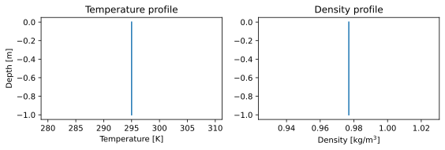
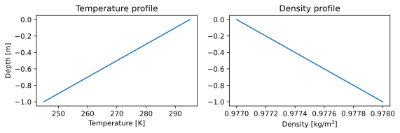

The subsurface
The subsurface of ARTS is always fully 3D with coordinates of altitude, geodetic latitude, and longitude.
The subsurface in ARTS is represented by three key components: the subsurface field, the subsurface field data, and the subsurface point.
The subsurface field contains all physical data of the entire subsurface. Each property of the subsurface field (temperature field, density field, etc.) is stored as a subsurface field data object, representing the full 3D field of that property. The local state of the subsurface field is represented by a subsurface point. A subsurface point effectively holds the local state of the subsurface at a specific location.
Key notations:
SubsurfaceField: The subsurface field. An instance is in this text named:subsurf_field. An example from the workspace issubsurf_field.SubsurfaceData: The subsurface field data. An instance is in this text named:subsurf_data.SubsurfacePoint: The local subsurface state. An instance is in this text named:subsurf_point.
Note
This text will also only deal with the core functionality of each of these three classes. For more advanced and supplementary functionality, please see the API documentation of the classes themselves. We will explicitly not cover file handling, data conversion, or other such topics in this text.
Warning
As the name of our model suggests, ARTS is primarily an atmospheric radiative transfer simulator. The subsurface functionality is relatively new and still very experimental. Use at own risk.
The full subsurface field
A subsurface field is represented by the class SubsurfaceField.
The subsurface field holds a collection of subsurface field data, SubsurfaceData,
that can be accessed and modified through a dict-like interface.
A subsurface field has a minimum altitude, bottom_depth, below which it is considered undefined.
It has no maximum altitude, instead relying on an external ellipsoid and elevation field to define the surface of the planet above it.
The ellipsoid and the elevation field are (often) part of the SurfaceField class
and are described in The surface and planet.
The subsurface field can be called as if it were a function taking altitude, geodetic latitude, and longitude
coordinate arguments to compute or extract the local subsurface state, SubsurfacePoint.
The core operations on subsurf_field are:
subsurf_field[key]: Accessing relevant subsurface field data:SubsurfaceData. See Subsurface field/point data access for more information on what constitutes a validkeysubsurf_field.bottom_depth: The minimum altitude of the subsurface. This is the altitude below which the subsurface field is undefined.subsurf_field(alt, lat, lon): Compute the local subsurface state (SubsurfacePoint) at the given coordinate. It is an error to call this withalt < subsurf_field.bottom_depth.
Shorthand graph for subsurf_field:
A single subsurface point
A subsurface point holds the local state of the subsurface.
This is required for local calculations of radiative transfer properties,
such as absorption, scattering, emission, etc.
A subsurface point is represented by an instance of SubsurfacePoint.
The main use on a subsurface point is to access the local, numerical state of the subsurface.
The core operations on subsurf_point are:
subsurf_point[key]: The local state as afloat. See Subsurface field/point data access for more information on what constitutes a validkey.subsurf_point.temperature: The localtemperature[K] as afloat.subsurf_point.density: The localdensity[kg/m³] as afloat.
Shorthand graph for subsurf_point:
Note
The subsurface point does not know where it is in the subsurface. This information is only available in the subsurface field. Positional data must be retained by the user if it is needed for calculations.
Subsurface field/point data access
The access operator subsurf_field[key] is used to get and set subsurface field data (SubsurfaceData)
in the subsurface field through the use of types of keys.
Likewise, the access operator subsurf_point[key] is used to get and set data in the subsurface point,
though it deals with pure floating point data.
Each type of key is meant to represent a different type of subsurface data.
The following types of keys are available:
SubsurfaceKey: Basic subsurface data. Defines temperature [K] and density [kg/m³].SubsurfacePropertyTag: Custom data that belongs to specific models of the subsurface.
Shorthand graph for key of different types:
Tip
Both subsurf_field["temperature"] and subsurf_field[pyarts3.arts.SubsurfaceKey.temperature] will give
the same SubsurfaceData back in python. This is
because pyarts3.arts.SubsurfaceKey("temperature") == pyarts3.arts.SubsurfaceKey.temperature.
The same is also true when accessing subsurf_point, though it gives floating point values.
Note
Using python str instead of the correct type may in very rare circumstances cause name-collisions.
Such name-collisions cannot be checked for. If it happens to you, please use the appropriate key
type manually to correct the problem.
Subsurface field data
The subsurface field data is a core component of the subsurface field.
It is stored in an instance of SubsurfaceData.
This type holds the entire subsurface data for a single subsurface property,
such as the full 3D temperature field, the full 3D pressure field, etc.
It also holds the logic for how to interpolate and extrapolate this data to any altitude, geodetic latitude, and longitude point.
As such, subsurface field data can also be called as if it were a function taking altitude, geodetic latitude, and longitude
to return the local floating point state of the subsurface property it holds.
These are the core operations on subsurf_data:
subsurf_data.data: The core data in variant form. See Data types for what it represents.subsurf_data.alt_upp: The settings for how to extrapolate above the allowed altitude. What is “allowed” is defined by the data type.subsurf_data.alt_low: The settings for how to extrapolate below the allowed altitude. What is “allowed” is defined by the data type.subsurf_data.lat_upp: The settings for how to extrapolate above the allowed geodetic latitude. What is “allowed” is defined by the data type.subsurf_data.lat_low: The settings for how to extrapolate below the allowed geodetic latitude. What is “allowed” is defined by the data type.subsurf_data.lon_upp: The settings for how to extrapolate above the allowed longitude. What is “allowed” is defined by the data type.subsurf_data.lon_low: The settings for how to extrapolate below the allowed longitude. What is “allowed” is defined by the data type.subsurf_data(alt, lat, lon): Extract the floating point value of the data at one specific altitude, geodetic latitude, and longitude. Returns a single float. Cannot respect the bottom of the subsurface because it is not available to the data. Instead, will strictly respect the extrapolation settings.
Shorthand graph:
Tip
An SubsurfaceData is implicitly constructible from each of the Data types described below.
The extrapolation settings will be set to appropriate defaults when an implicit construction takes place.
These default settings depend on the type and even available data.
Note
If the extrapolation settings or the data itself cannot be used to extract a value at a point using the call-operator,
the SubsurfaceData will raise an exception. This is to ensure that the user is aware of the problem.
Changing the extrapolation settings will likely fix the immediate problem, but be aware that the consequences of doing so
might yield numerical differences from what was originally expected.
Extrapolation rules
The rules for extrapolation is governed by InterpolationExtrapolation.
Please see its documentation for more information.
Extrapolation happens only outside the grids of the data.
Interpreting the data inside a grid is done on a type-by-type basis.
Data types
Below are the types of data that can be stored in the subsurface data. Each data type has its own rules for how to interpret, interpolate, and extrapolate the data.
Tip
Different subsurface field data types can be mixed in the same subsurface field. There are no restrictions on how many types can be used in the same subsurface field.
Numeric
Numeric data simply means that the subsurface contains constant data.
Extrapolation rules are not relevant for this data type as it is constant everywhere.
An example of using Numeric as subsurface field data is given in the following code block.
import matplotlib.pyplot as plt
import numpy as np
import pyarts3 as pyarts
subsurf_field = pyarts.arts.SubsurfaceField(bottom_depth=-1)
subsurf_field["t"] = 295
subsurf_field["rho"] = 0.977
fig = plt.figure(figsize=(14, 8))
fig, subs = pyarts.plots.SubsurfaceField.plot(subsurf_field, alts=np.linspace(-1, 0), fig=fig, keys=["t", "rho"])
subs.flatten()[0].set_title("Temperature profile")
subs.flatten()[1].set_title("Density profile")
subs.flatten()[0].set_ylabel("Depth [m]")
subs.flatten()[0].set_xlabel("Temperature [K]")
subs.flatten()[1].set_xlabel("Density [kg/m$^3$]")
(Source code, svg, pdf)
{kind=link}

GeodeticField3
If the subsurface data is of the type GeodeticField3,
the data is defined on a grid of altitude, geodetic latitude, and longitude.
It interpolates linearly between the grid points when extracting point-wise data.
For sake of this linear interpolation, longitude is treated as a cyclic coordinate between [-180, 180) - please ensure your grid is defined accordingly.
This data type fully respects the rules of extrapolation outside its grid.
An example of using GeodeticField3 as subsurface field data is given in the following code block.
Tip
It is possible to use any number of 1-long grids in a GeodeticField3 meant for use as a SubsurfaceData.
The 1-long grids will by default apply the “nearest” interpolation rule for those grids, potentially reducing the subsurface data
to a 1D profile if only the altitude is given, or even a constant if all three grids are 1-long.
Note
If the GeodeticField3 does not cover the full range of the subsurface, the extrapolation rules will be used to
extrapolate it. By default, these rules are set to not allow any extrapolation. This can be changed by setting the
extrapolation settings as needed. See headers Extrapolation rules and Subsurface field data for more information.
Warning
Even though the longitude grid is cyclic, only longitude values [-540, 540) are allowed when interpolating the field. This is because we need the interpolation to be very fast and this is only possible for single cycles of the longitude. Most algorithm will produce values [-360, 360] for the longitude, so this should in practice not be a problem for normal use-cases. Please still ensure that the grid is defined properly or the interpolation routines will fail.
NumericTernaryOperator
This operator (NumericTernaryOperator) represents that the subsurface property is purely
a function of altitude, geodetic latitude, and longitude. The operator takes three arguments and returns a float.
Extrapolation rules are not relevant for this data type as it is a function.
An example of using NumericTernaryOperator as subsurface field data is given in the following code block.
import matplotlib.pyplot as plt
import numpy as np
import pyarts3 as pyarts
subsurf_field = pyarts.arts.SubsurfaceField(bottom_depth=-1)
subsurf_field["t"] = lambda alt, lat, lon: 295 + 5 * alt * 10
subsurf_field["rho"] = lambda alt, lat, lon: 0.977 - 0.001 * alt
fig = plt.figure(figsize=(14, 8))
fig, subs = pyarts.plots.SubsurfaceField.plot(subsurf_field, alts=np.linspace(-1, 0), fig=fig, keys=["t", "rho"])
subs.flatten()[0].set_title("Temperature profile")
subs.flatten()[1].set_title("Density profile")
subs.flatten()[0].set_ylabel("Depth [m]")
subs.flatten()[0].set_xlabel("Temperature [K]")
subs.flatten()[1].set_xlabel("Density [kg/m$^3$]")
(Source code, svg, pdf)
{kind=link}

Tip
Any kind of python function-like object can be used as
a NumericTernaryOperator. It must simply take three floats and return another float.
If you want to pass in a custom class all you need is to define __call__(self, alt, lat, lon) for it.